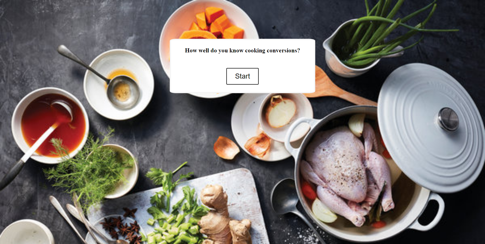
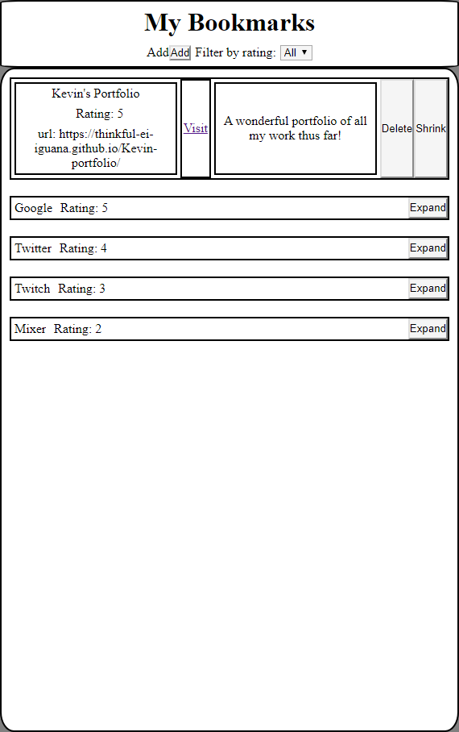

About Me
Hi, Im Kevin. I’m a fullstack web developer based out of Atlanta, GA. Trying to understand how things work has always fascinated me. That fascination has driven me from a kid who spent countless hours playing with LEGOs to graduate studies in psychology and clinical social work. I always found myself spending much of my free time at my computer despite knowing very little about how it worked. In a past life I worked to help people understand how they work in the context of their own lives as an individual and family therapist. That line of work taught me two important things. The first was to never underestimate the value of taking a collaborative approach to solving problems. Second was the power of perception and how dramatically that impacts what we (think) we can and can't do. Now I tackle projects that use technology to help people thrive and engage with the world in ways that empower them to do things they may not have tried before. Seeing a project come together always feels like magic to me. You can check out some of my work below.
Portfolio
Kitchen Metrics Quiz
Get handy in the kitchen using this quick quiz app to learn metric conversions! This app allows users to test their knowledge of metric conversions commonly used in cooking. Score and progress are displayed across the top of the screen.
This project was built using HTML, Javascript and Jquery.
Try it out See the codeBookmark Manager
A simple, intuitive application for gathering and sorting bookmarks to your favorite websites. Users can add and delete bookmakrs to different websites, while creating rankings and short descriptions. Bookmarks can also be filtered by rating.
This project was built using HTML, Javascript, Jquery and API interfacing.
Try it out See the code